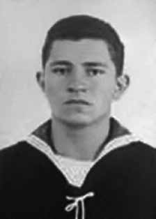

Grenaldo
de Jesus
da Silva
CIRCUNSTÂNCIAS DA MORTE
Grenaldo de Jesus da Silva foi executado por agentes do Estado no dia 30 de maio de 1972 no interior de um avião, durante ação empreendida no aeroporto de Congonhas, em São Paulo.
De acordo com a falsa versão divulgada à época, Grenaldo teria embarcado em Congonhas e, durante o voo, armado com uma pistola, teria declarado o sequestro e determinado o retorno da aeronave – um avião Electra II da Varig – ao aeroporto de origem. Segundo tal versão, ao ver frustrado seu plano inicial de fugir ou de conseguir o dinheiro do resgate, Grenaldo teria se suicidado com um tiro na cabeça. Ato contínuo, os agentes teriam cercado e invadido a aeronave. O atestado de óbito declara, como causa da morte, suicídio.
A ficha do necrotério indica ainda que Grenaldo morreu devido a traumatismo cranioencefálico (TCE). À época dos fatos, foi realizada perícia na aeronave pelos peritos Gustavo Adolfo Franco Ferreira, coronel aviador da Força Aérea Brasileira, e Paulo Lopes Gallindo, engenheiro da Varig. A perícia concluiu que a aeronave foi atingida no radiador, na cabine do comandante e no motor, sendo, no último, provavelmente por alguém que teria se posicionado sobre a asa esquerda da aeronave. Os peritos indicam que, na cabine do comandante, foram encontrados dois projéteis de arma de fogo e manchas de sangue.
A perícia afirma que Grenaldo teria sido morto pelo disparo de sua própria arma. Segundo os peritos, o disparo teria sido ocasionado por um descuido, uma vez que seria improvável que alguém efetuasse um disparo contra si no momento em que tenta resistir a outrem. Desse modo, a versão de suicídio não foi confirmada. Segundo o Inquérito Policial Militar, instaurado pelo coronel aviador Renato Barbieri, para imputar responsabilidade a Grenaldo, tão logo o comandante da 4ª Zona Aérea, major Délio Jardim de Mattos, tomou conhecimento do sequestro do avião, acionou a Polícia Militar, o Exército, a Secretaria de Segurança e a equipe do Esquadrão Aeroterrestre de Salvamento – Parasar, no Rio de Janeiro.
O documento informa que, durante as negociações com Grenaldo, que aceitou a liberação dos passageiros, permaneceram na aeronave apenas o major Rebello, o comandante Celso Caldeira e o mecânico de voo Alcides Pegrucci Ferreira. Os dois primeiros teriam fugido pelas janelas laterais da cabine e o último teria travado uma disputa com Grenaldo. Em tal disputa, apenas uma porta, que ambos tentavam abrir ou fechar, separava-os. Diante disso, Grenaldo teria, segundo a versão oficial, atirado contra si.
Somente depois, as forças de segurança – constituídas pelo Departamento de Ordem Política e Social (DOPS), Parasar e COE, da Polícia Militar de São Paulo, sob o comando da 4ª Zona Aérea – teriam invadido a aeronave. O documento afirma que o disparo foi feito pela mão esquerda de Grenaldo, mas não indica a parte da cabeça atingida pelo projétil. No atestado de óbito, assinado pelo legista Sergio Acquesta, a hora da morte foi às 22h34, entretanto, nesse horário, segundo o Inquérito Policial Militar, Grenaldo ainda estava vivo.
Nas fitas gravadas da comunicação entre o comando e o sequestrador, a última mensagem ocorreu somente às 22h59. O corpo de Grenaldo foi encaminhado ao Instituto Médico Legal (IML) pelo delegado do DOPS-SP Alcides Cintra Bueno Filho, que atestou o horário da sua morte como 22h34. Consta que foi sepultado no dia 1º de junho, no cemitério Dom Bosco, no bairro de Perus da cidade de São Paulo. O exame necroscópico foi realizado pelos médicos legistas Sérgio Belmiro Acquesta e Helena Fumie Okaijima, que afirmaram que a morte de Grenaldo foi decorrente de um tiro na cabeça.
Apesar de seu nome ter sido registrado, de maneira correta, no atestado de óbito, na requisição de exame necroscópico e no próprio exame, Grenaldo foi registrado como indigente. Em 2003, o caso foi objeto de cobertura pela revista Época. O periódico entrevistou o sargento da Aeronáutica José Barazal Alvarez, na ocasião, controlador de tráfego aéreo do aeroporto de Congonhas e responsável pela comunicação com a tripulação durante o período em que Grenaldo permaneceu dentro do avião.
O sargento revelou ao filho de Grenaldo, Grenaldo Erdmundo da Silva Mesut, que seu pai não havia se suicidado, mas fora assassinado. José contou que Grenaldo carregava no peito uma carta na qual explicava que estava sendo perseguido e que não podia trabalhar por causa de seus documentos. Afirmava ter cometido aquele ato para fugir para o Uruguai e construir uma nova vida, para, posteriormente, buscar a esposa e o filho. No mesmo local onde encontrou a carta, no peito de Grenaldo, contou que viu um segundo tiro. Também em entrevista à revista Época, o mecânico Alcides Pegrucci Ferreira, único a permanecer na aeronave com Grenaldo, afirmou: “virou piada: um sequestrador suicidado com um tiro na nuca”. E concluiu dizendo que “a ditadura decidiu que era suicídio e a gente teve de aceitar. Botaram um pano em cima”.
No relatório do Ministério da Aeronáutica, encaminhado em 1993 ao ministro da Justiça, registra-se que Grenaldo foi “morto em 30/5/1972 ao tentar sequestrar um avião comercial em São Paulo”. Há ainda, em outro documento, a informação de que usava o codinome Nelson Mesquita e havia sido morto com um tiro na nuca. Por isso, o sargento José Barazal Alvares questiona-se, em entrevista à referida revista, como alguém cometeria um suicídio com um tiro na nuca.
Em 2004, a CEMDP considerou que, embora o Inquérito Policial Militar tenha sido inconclusivo quanto à motivação política de Grenaldo de Jesus da Silva na realização do sequestro, restou claro que foi este o entendimento que conduziu a ação policial militar. Segundo a relatora do caso, “a aeronave em que Grenaldo se encontrava quando foi morto se assemelha às dependências policiais, já que a vítima estava sob custódia das forças de segurança”.
O Ministério Público Federal instaurou, em 2011, o auto nº 1.34.001.007799/2011-82 para investigar o homicídio e a ocultação de cadáver de Grenaldo. Seu corpo foi sepultado no cemitério Dom Bosco. Em 1990, ao ser descoberta a vala clandestina de Perus, foram encontradas 1.049 ossadas, entre as quais estariam os restos mortais de Grenaldo. Diante da morte e da ausência de identificação de seus restos mortais, os efeitos do desaparecimento forçado de Grenaldo de Jesus da Silva permanecem.
Grenaldo de Jesus da Silva was executed by State agents on May 30, 1972 inside a plane, during an action carried out at Congonhas airport, in São Paulo.
According to the false version published at the time, Grenaldo would have boarded in Congonhas and, during the flight, armed with a pistol, he would have declared the kidnapping and ordered the return of the aircraft – an Electra II plane from Varig – to the airport of origin. According to this version, when his initial plan to escape or get the ransom money was frustrated, Grenaldo committed suicide by shooting himself in the head. Immediately, the agents would have surrounded and invaded the aircraft. The death certificate states the cause of death as suicide.
The morgue record also indicates that Grenaldo died due to traumatic brain injury (TBI). At the time of the events, an examination was carried out on the aircraft by experts Gustavo Adolfo Franco Ferreira, aviator colonel of the Brazilian Air Force, and Paulo Lopes Gallindo, an engineer at Varig. The expertise concluded that the aircraft was hit in the radiator, in the captain's cabin and in the engine, the latter being probably by someone who had positioned himself on the left wing of the aircraft. Experts indicate that, in the commander's cabin, two firearm projectiles and blood stains were found.
Experts say that Grenaldo was killed by the shot of his own gun. According to experts, the shooting was caused by carelessness, as it would be unlikely that someone would fire a shot at themselves when they were trying to resist someone else. Therefore, the suicide version was not confirmed. According to the Military Police Inquiry, initiated by aviator colonel Renato Barbieri, to attribute responsibility to Grenaldo, as soon as the commander of the 4th Air Zone, Major Délio Jardim de Mattos, became aware of the hijacking of the plane, he called the Military Police, the Army, the Security Secretariat and the team from the Airborne Rescue Squadron – Parasar, in Rio de Janeiro.
The document states that, during negotiations with Grenaldo, who accepted the release of the passengers, only Major Rebello, Commander Celso Caldeira and flight mechanic Alcides Pegrucci Ferreira remained on the aircraft. The first two would have fled through the side windows of the cabin and the last would have gotten into a dispute with Grenaldo. In such a dispute, only one door, which both tried to open or close, separated them. Given this, Grenaldo would have, according to the official version, shot himself.
Only then did the security forces – made up of the Department of Political and Social Order (DOPS), Parasar and COE, of the São Paulo Military Police, under the command of the 4th Air Zone – invade the aircraft. The document states that the shot was fired by Grenaldo's left hand, but does not indicate the part of the head hit by the projectile. In the death certificate, signed by coroner Sergio Acquesta, the time of death was 10:34 pm, however, at that time, according to the Military Police Inquiry, Grenaldo was still alive.
In the recorded tapes of communication between the command and the hijacker, the last message occurred only at 10:59 pm. Grenaldo's body was sent to the Legal Medical Institute (IML) by DOPS-SP delegate Alcides Cintra Bueno Filho, who certified the time of his death as 10:34 pm. It is said that he was buried on June 1st, in the Dom Bosco cemetery, in the Perus neighborhood of the city of São Paulo. The necroscopic examination was carried out by coroners Sérgio Belmiro Acquesta and Helena Fumie Okaijima, who stated that Grenaldo's death was the result of a gunshot to the head.
Despite his name being correctly recorded on the death certificate, in the request for a necroscopic examination and in the examination itself, Grenaldo was registered as indigent. In 2003, the case was covered by Época magazine. The newspaper interviewed Air Force Sergeant José Barazal Alvarez, at the time, air traffic controller at Congonhas airport and responsible for communicating with the crew during the period in which Grenaldo remained inside the plane.
The sergeant revealed to Grenaldo's son, Grenaldo Erdmundo da Silva Mesut, that his father had not committed suicide, but had been murdered. José said that Grenaldo carried a letter on his chest in which he explained that he was being persecuted and that he could not work because of his documents. He claimed to have committed that act to escape to Uruguay and build a new life, and later look for his wife and son. In the same place where he found the letter, in Grenaldo's chest, he said he saw a second shot. Also in an interview with Época magazine, mechanic Alcides Pegrucci Ferreira, the only one to remain on the aircraft with Grenaldo, stated: “it became a joke: a hijacker committed suicide with a gunshot to the back of the head”. And he concluded by saying that "the dictatorship decided it was suicide and we had to accept it. They put a blanket over it."
In the report from the Ministry of Aeronautics, sent in 1993 to the Minister of Justice, it is recorded that Grenaldo was “killed on 5/30/1972 when trying to hijack a commercial plane in São Paulo”. There is also, in another document, information that he used the code name Nelson Mesquita and had been killed with a shot in the back of the head. Therefore, Sergeant José Barazal Alvares asks himself, in an interview with the aforementioned magazine, how someone would commit suicide by shooting themselves in the back of the head.
In 2004, CEMDP considered that, although the Military Police Inquiry was inconclusive regarding the political motivation of Grenaldo de Jesus da Silva in carrying out the kidnapping, it remained clear that this was the understanding that led to the military police action. According to the case's rapporteur, “the aircraft in which Grenaldo was on when he was killed resembles police facilities, as the victim was in the custody of the security forces”.
In 2011, the Federal Public Ministry opened case number 1.34.001.007799/2011-82 to investigate the homicide and the concealment of Grenaldo's corpse. His body was buried in the Dom Bosco cemetery. In 1990, when the clandestine grave in Perus was discovered, 1,049 bones were found, including the remains of Grenaldo. In light of his death and the lack of identification of his remains, the effects of the forced disappearance of Grenaldo de Jesus da Silva remain.
Grenaldo de Jesús da Silva fue ejecutado por agentes del Estado el 30 de mayo de 1972 dentro de un avión, durante una acción realizada en el aeropuerto de Congonhas, en São Paulo.
Según la versión falsa publicada en ese momento, Grenaldo habría abordado en Congonhas y, durante el vuelo, armado con una pistola, habría declarado el secuestro y ordenado el regreso de la aeronave -un Electra II de Varig- al aeropuerto de origen. Según esta versión, cuando su plan inicial de escapar o conseguir el dinero del rescate se vio frustrado, Grenaldo se suicidó pegándose un tiro en la cabeza. Inmediatamente, los agentes habrían rodeado e invadido la aeronave. El certificado de defunción indica que la causa de la muerte fue suicidio.
El registro de la morgue también indica que Grenaldo murió debido a un traumatismo craneoencefálico (TCE). En el momento de los hechos, la aeronave era realizada un examen por los peritos Gustavo Adolfo Franco Ferreira, coronel aviador de la Fuerza Aérea Brasileña, y Paulo Lopes Gallindo, ingeniero de Varig. La pericia concluyó que la aeronave fue impactada en el radiador, en la cabina del capitán y en el motor, este último probablemente por alguien que se había posicionado en el ala izquierda de la aeronave. Peritos indican que, en la cabina del comandante, se encontraron dos proyectiles de arma de fuego y manchas de sangre.
Los expertos dicen que Grenaldo fue asesinado por un disparo de su propia arma. Según los expertos, el tiroteo se produjo por descuido, ya que era poco probable que alguien se disparara a sí mismo cuando intentaba resistirse a otra persona. Por tanto, la versión del suicidio no fue confirmada. Según la Investigación de la Policía Militar, iniciada por el coronel aviador Renato Barbieri, para atribuir la responsabilidad a Grenaldo, apenas el comandante de la 4ª Zona Aérea, mayor Délio Jardim de Mattos, tuvo conocimiento del secuestro del avión, llamó a la Policía Militar, al Ejército, a la Secretaría de Seguridad y al equipo del Escuadrón Aerotransportado de Rescate – Parasar, en Río de Janeiro.
El documento precisa que, durante las negociaciones con Grenaldo, quien aceptó la liberación de los pasajeros, sólo permanecieron en la aeronave el mayor Rebello, el comandante Celso Caldeira y el mecánico de vuelo Alcides Pegrucci Ferreira. Los dos primeros se habrían dado a la fuga por las ventanillas laterales de la cabina y el último se habría enzarzado en una disputa con Grenaldo. En tal disputa, sólo una puerta, que ambos intentaron abrir o cerrar, los separaba. Ante esto, Grenaldo se habría disparado, según la versión oficial.
Sólo entonces las fuerzas de seguridad –integradas por el Departamento de Orden Político y Social (DOPS), Parasar y COE, de la Policía Militar de São Paulo, bajo el mando de la 4ª Zona Aérea– invadieron la aeronave. El documento señala que el disparo fue realizado con la mano izquierda de Grenaldo, pero no indica la parte de la cabeza impactada por el proyectil. En el acta de defunción, firmada por el médico forense Sergio Acquesta, la hora del fallecimiento era las 22.34 horas, sin embargo, a esa hora, según la Investigación de la Policía Militar, Grenaldo aún se encontraba con vida.
En las cintas grabadas de comunicación entre el comando y el secuestrador, el último mensaje ocurrió solo a las 10:59 pm. El cuerpo de Grenaldo fue enviado al Instituto Médico Legal (IML) por el delegado del DOPS-SP, Alcides Cintra Bueno Filho, quien certificó la hora de su muerte a las 22:34 horas. Se dice que fue enterrado el día 1 de junio, en el cementerio Dom Bosco, en el barrio Perus de la ciudad de São Paulo. El examen necroscópico fue realizado por los médicos forenses Sérgio Belmiro Acquesta y Helena Fumie Okaijima, quienes afirmaron que la muerte de Grenaldo fue producto de un disparo en la cabeza.
A pesar de que su nombre consta correctamente en el certificado de defunción, en la solicitud de examen necroscópico y en el propio examen, Grenaldo fue registrado como indigente. En 2003, el caso fue cubierto por la revista Época. El diario entrevistó al sargento de la Fuerza Aérea José Barazal Álvarez, en ese momento controlador aéreo del aeropuerto de Congonhas y responsable de la comunicación con la tripulación durante el período en que Grenaldo permaneció dentro del avión.
El sargento reveló al hijo de Grenaldo, Grenaldo Erdmundo da Silva Mesut, que su padre no se había suicidado, sino que había sido asesinado. José dijo que Grenaldo llevaba una carta en el pecho en la que explicaba que estaba siendo perseguido y que no podía trabajar por sus documentos. Afirmó haber cometido ese acto para escapar a Uruguay y construir una nueva vida, para luego buscar a su esposa e hijo. En el mismo lugar donde encontró la carta, en el pecho de Grenaldo, dijo haber visto un segundo disparo. También en una entrevista con la revista Época, el mecánico Alcides Pegrucci Ferreira, el único que permaneció en el avión con Grenaldo, afirmó: “se convirtió en una broma: un secuestrador se suicidó de un tiro en la nuca”. Y concluyó diciendo que "la dictadura decidió que era un suicidio y tuvimos que aceptarlo. Le pusieron una manta".
En el informe del Ministerio de Aeronáutica, enviado en 1993 al Ministro de Justicia, se registra que Grenaldo fue “asesinado el 30/05/1972 cuando intentaba secuestrar un avión comercial en São Paulo”. También hay información en otro documento de que usaba el nombre clave de Nelson Mesquita y que había sido asesinado de un tiro en la nuca. Por ello, el sargento José Barazal Alvares se pregunta, en entrevista con la citada revista, cómo alguien podría suicidarse pegándose un tiro en la nuca.
En 2004, el CEMDP consideró que, si bien la Investigación de la Policía Militar no fue concluyente respecto de la motivación política de Grenaldo de Jesus da Silva para llevar a cabo el secuestro, quedó claro que ese fue el entendimiento que llevó a la acción de la policía militar. Según el relator del caso, “la aeronave en la que se encontraba Grenaldo cuando fue asesinado parece una instalación policial, ya que la víctima se encontraba bajo custodia de las fuerzas de seguridad”.
En 2011, el Ministerio Público Federal abrió la causa número 1.34.001.007799/2011-82 para investigar el homicidio y el ocultamiento del cadáver de Grenaldo. Su cuerpo fue enterrado en el cementerio Dom Bosco. En 1990, cuando se descubrió la fosa clandestina de Perus, se encontraron 1.049 huesos, entre ellos los restos de Grenaldo. Ante su muerte y la falta de identificación de sus restos, los efectos de la desaparición forzada de Grenaldo de Jesus da Silva permanecen.